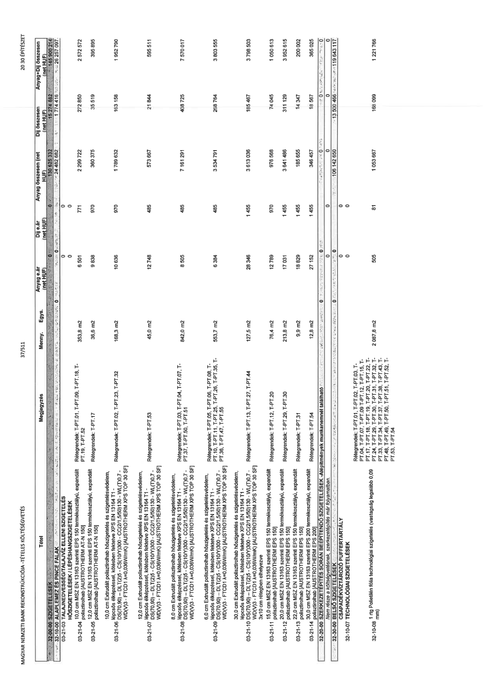

| Tétel | Megjegyzés | Menny. | Egys. | Anyag e.ár (net HUF) | Díj e.ár (net HUF) | Anyag összesen (net HUF) | Díj összesen (net HUF) | Anyag+Díj összesen (net HUF) |
|---|---|---|---|---|---|---|---|---|
| 32-00-00 SZIGETELÉSEK | NaN | NaN | NaN | 0 | 0 | 130 625 332 | 15 274 882 | 145 900 214 |
| 32-10-00 ALAPLEMEZ ÉS PINCE FALAK HŐSZIGETELÉSEK / LÉPÉSHANGSZIGETELÉSEK | NaN | NaN | NaN | 0 | 0 | 24 482 682 | 1 774 416 | 26 257 097 |
| 03-21-03 TALAJNEDVESSÉG/TALAJVÍZ ELLENI SZIGETELÉS | NaN | NaN | NaN | 0 | 0 | 0 | 0 | 0 |
| 03-21-04 10,0 cm MSZ EN 13163 szerinti EPS 150 termékosztályú, expandált polisztirolhab [AUSTROTHERM AT-N 150] | Rétegrendek: T-PT.01, T-PT.09, T-PT.18, T-PT.19, T-PT.52 | 353,8 | m2 | 6 501 | 771 | 2 299 722 | 272 850 | 2 572 572 |
| 03-21-05 12,0 cm MSZ EN 13163 szerinti EPS 150 termékosztályú, expandált polisztirolhab [AUSTROTHERM AT-N 150] | Rétegrendek: T-PT.17 | 36,6 | m2 | 9 838 | 970 | 360 375 | 35 519 | 395 895 |
| 03-21-06 10,0 cm Extrudált polisztirolhab hőszigetelés és szigetelésvédelem, lépcsős élképzéssel, kötésben fektetve XPS EN 13164 T1 - DS(70,90) - DLT(2)5 - CS(10/Y)300 - CC(2/1,5/50)130 - WL(T)0,7 - WD(V)3 - FTCD1 λ=0,038W/mK) [AUSTROTHERM XPS TOP 30 SF] | Rétegrendek: T-PT.02, T-PT.23, T-PT.32 | 168,3 | m2 | 10 636 | 970 | 1 789 632 | 163 158 | 1 952 790 |
| 03-21-07 12,0 cm Extrudált polisztirolhab hőszigetelés és szigetelésvédelem, lépcsős élképzéssel, kötésben fektetve XPS EN 13164 T1 - DS(70,90) - DLT(2)5 - CS(10/Y)300 - CC(2/1,5/50)130 - WL(T)0,7 - WD(V)3 - FTCD1 λ=0,038W/mK) [AUSTROTHERM XPS TOP 30 SF] | Rétegrendek: T-PT.53 | 45,0 | m2 | 12 748 | 485 | 573 667 | 21 844 | 595 511 |
| 03-21-08 8,0 cm Extrudált polisztirolhab hőszigetelés és szigetelésvédelem, lépcsős élképzéssel, kötésben fektetve XPS EN 13164 T1 - DS(70,90) - DLT(2)5 - CS(10/Y)300 - CC(2/1,5/50)130 - WL(T)0,7 - WD(V)3 - FTCD1 λ=0,038W/mK) [AUSTROTHERM XPS TOP 30 SF] | Rétegrendek: T-PT.03, T-PT.04, T-PT.07, T-PT.37, T-PT.50, T-PT.51 | 842,0 | m2 | 8 505 | 485 | 7 161 291 | 408 725 | 7 570 017 |
| 03-21-09 6,0 cm Extrudált polisztirolhab hőszigetelés és szigetelésvédelem, lépcsős élképzéssel, kötésben fektetve XPS EN 13164 T1 - DS(70,90) - DLT(2)5 - CS(10/Y)300 - CC(2/1,5/50)130 - WL(T)0,7 - WD(V)3 - FTCD1 λ=0,038W/mK) [AUSTROTHERM XPS TOP 30 SF] | Rétegrendek: T-PT.05, T-PT.06, T-PT.08, T-PT.10, T-PT.11, T-PT.25, T-PT.26, T-PT.35, T-PT.36, T-PT.47, T-PT.55 | 553,7 | m2 | 6 384 | 485 | 3 534 791 | 268 764 | 3 803 555 |
| 03-21-10 30,0 cm Extrudált polisztirolhab hőszigetelés és szigetelésvédelem, lépcsős élképzéssel, kötésben fektetve XPS EN 13164 T1 - DS(70,90) - DLT(2)5 - CS(10/Y)300 - CC(2/1,5/50)130 - WL(T)0,7 - WD(V)3 - FTCD1 λ=0,036W/mK) [AUSTROTHERM XPS TOP 30 SF] 3x10 cm rétegben elhelyezve | Rétegrendek: T-PT.13, T-PT.27, T-PT.44 | 127,5 | m2 | 28 346 | 1 455 | 3 613 036 | 185 467 | 3 798 503 |
| 03-21-11 15,0 cm MSZ EN 13163 szerinti EPS 150 termékosztályú, expandált polisztirolhab [AUSTROTHERM EPS 150] | Rétegrendek: T-PT.12, T-PT.20 | 76,4 | m2 | 12 789 | 970 | 976 588 | 74 045 | 1 050 613 |
| 03-21-12 20,0 cm MSZ EN 13163 szerinti EPS 150 termékosztályú, expandált polisztirolhab [AUSTROTHERM EPS 150] | Rétegrendek: T-PT.29, T-PT.30 | 213,8 | m2 | 17 031 | 1 455 | 3 641 486 | 311 129 | 3 952 615 |
| 03-21-13 22,0 cm MSZ EN 13163 szerinti EPS 150 termékosztályú, expandált polisztirolhab [AUSTROTHERM EPS 150] | Rétegrendek: T-PT.31 | 9,9 | m2 | 18 829 | 1 455 | 185 655 | 14 347 | 200 002 |
| 03-21-14 30,0 cm MSZ EN 13163 szerinti EPS 200 termékosztályú, expandált polisztirolhab [AUSTROTHERM EPS 200] | Rétegrendek: T-PT.54 | 12,8 | m2 | 27 152 | 1 455 | 346 457 | 18 567 | 365 025 |
| 32-20-00 SZERKEZETÉPÍTÉS SORÁN BEÉPÍTENDŐ SZIGETELÉSEK -Alépítmények munkánemnél található Nem része a költségvetésnek, szerkezetépítés már folyamatban. | NaN | NaN | NaN | 0 | 0 | 0 | 0 | 0 |
| 32-30-00 BELSŐ SZIGETELÉSEK | NaN | NaN | NaN | 0 | 0 | 106 142 650 | 13 500 466 | 119 643 117 |
| 32-10-07 TECHNOLÓGIAI SZIGETELÉSEK | NaN | NaN | NaN | 0 | 0 | 0 | 0 | 0 |
| 32-10-08 1 rtg Polietilén fólia technológiai szigetelés (vastagság legalább 0,09 mm) | Rétegrendek: T-PT.01, T-PT.02, T-PT.03, T-PT.04, T-PT.07, T-PT.09, T-PT.12, T-PT.15, T-PT.17, T-PT.18, T-PT.19, T-PT.20, T-PT.22, T-PT.24, T-PF.29, T-PT.30, T-PT.31, T-PT.32, T-PT.33, T-PT.34, T-PT.37, T-PT.38, T-PT.43, T-PT.48, T-PT.49, T-PT.50, T-PT.51, T-PT.52, T-PT.53, T-PT.54 | 2 087,8 | m2 | 505 | 81 | 1 053 667 | 168 099 | 1 221 766 |
